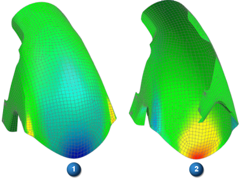

壳单元的应力和应变结果通过单元在壳应力恢复点之间的顶面和底面进行插补。壳应力恢复点（如节点位置或单元质心）因求解器、单元公式和输出请求而异。
对壳单元后处理结果时，必须指定结果类型，并可选择是否使用设置结果命令来指定以下结果显示的其中一种：
结果的位置，可以选择顶部、底部或者平均值/中间值
使用顶部和底部选项同时显示壳曲面的顶部和底部结果。这个选项使用忽略背面可视化首选项可正确显示结果。请求顶部与底部应力或应变结果时，系统将提示打开忽略背面
选择最大值或最小值选项将分别显示结果的最大或最小绝对值
应力或应变可归属于折弯时只能使用折弯选项
如果上述选项都没有指定，将默认使用顶部选项。
|

|